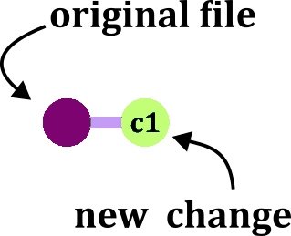

This presentation
😸Code on GitHub: OndrejMottl/VersionControl_FZU_November2025

🖼️Slides: bit.ly/mottl_prez_fzu_202511
Ring a bell?

Git/GitHub setup AKA “git hell”

Follow instructions in Version Control - git hell (a separate presentation).
Getting all the necessary software installed, configured, and playing nicely together is honestly half the battle … Brace yourself for some pain
Weapon of choice (GUI)
GUI = Graphical User Interface
I will be showing you how to use:
You still can use the shell.
Basic vocabulary
- A script is a record of code.
- Project is self contained project/study/paper containg scripts, data, figures, etc.
- Every such project is called repository (ie a repo)
- Your local repository is called local
- Your online repository, is called remote

Git init (project first)
Activate git for a repo
Create new project with git tracking

Git integration is automatic in Source control panel

For existing project
git initCreate new project with git tracking
git init <DIRECTORY>a commit
A commit is a record of a change
If you create or edit a file in your repository and save the changes, you need to record your change via a commit
Chess analogy?

Chess move diary:
- Bc4 (Bishop to c4)
- Nf3 (Knight to f3)
- Qc7 (Queen to c7)
a commit

Pawn to d4

Edit line 32 of file A
3 states of a file


Staging changes
Make a change to a file and save it. Now stage the change:

- The red icon indicates removed files.
- The yellow icon indicates modified files.
- The green icon indicates added files.

Stage changes:
git add <FILE>Unstage changes:
git reset <FILE>a first commit
Commit (record) staged changes:


git commit -am "commit message"Commit message
Commits are quick and cheap. Therefore:
- commit often (!)
- provide useful commit messages.

Commit history

remote

Update remote - PUSH
Now we need to sync changes with the remote using PUSH
Add a remote to existing local repo (only once):

Push local to remote (GitHub):

Add a remote to existing local repo (only once):

Push local to remote (GitHub):

Add a remote to existing local repo (only once):
git remote add origin https://github.com/<OWNER>/<REPO>Push local to remote (GitHub):
git pushupdate local- PULL

update local- PULL

update local- PULL
Now we need to sync changes from the remote to local using PULL
Pull from remote (GitHub) to local

Pull from remote (GitHub) to local
Pull from remote (GitHub) to local:
git pullA GitHub repo

Roles (permissions)

Git Clone (repo first)
Git clone (repo first)
Copy (download) from remote repo to local machine
Example of online repo: OndrejMottl/VersionControl-playground

Open Command Palette (Ctrl+Shift+p)
Paste in URL: "https://github.com/<OWNER>/<REPO>.git"
git clone https://github.com/<OWNER>/<REPO>.git <DIRECTORY>Merge conflict 💩💩💩

A merge conflict can occur when you are changing the same line in one file differently.
Ups! I have made a mistake 😮
How to undo last commit?
Variant A: I commited but NOT pushed yet.

Open Command Palette (Ctrl+Shift+p)
Write Git: Undo Last Commit
git reset --soft HEAD@{1}Ups! I have made a mistake 😮
How to undo last commit?
Variant B: I commited AND pushed already.
Right-click on the commit you would like to undo to and select Revert a commit.

In the Source control panel -> COMMITS section -> Right-click on the commit you want to revert to -> Select the Reset Current Branch to Previous Commit

Copy the SHA of the last commit
git reset --hard <SHA>Branches

Branches

Make a branch


git branch <BRANCH-NAME>Switching between branches
The default branch is called main or master
Switching between branches is sometimes called (checkout)
‼️ Make sure that you have all changes commited before switching ‼️

git checkout <BRANCH-NAME>Merging branches

Merging branches

Pull Request (PR)
Request to merge a branch

Pull Request - create
After you push new branch, you should have a green button Compare & pull request on GitHub

Pull Request - components

Pull Request - Overview
Now you can add more commits on GitHub, (add Comment to start discussion), or merge the branch.

Pull Request - review
A tool to review on GitHub suggested changes

Delete branch
We can delete branch directly on GitHub after merging

Delete branch
We can also delete branch before merging

Open Command Palette (Ctrl+Shift+p)
Select Git: Delete branch …
To delete a local branch
git branch -d <BRANCH-NAME>To delete a remote on GitHub branch
git push origin --delete <BRANCH-NAME>
Introduction to GitHub and Version Control
28.11.2025

{kind=link}